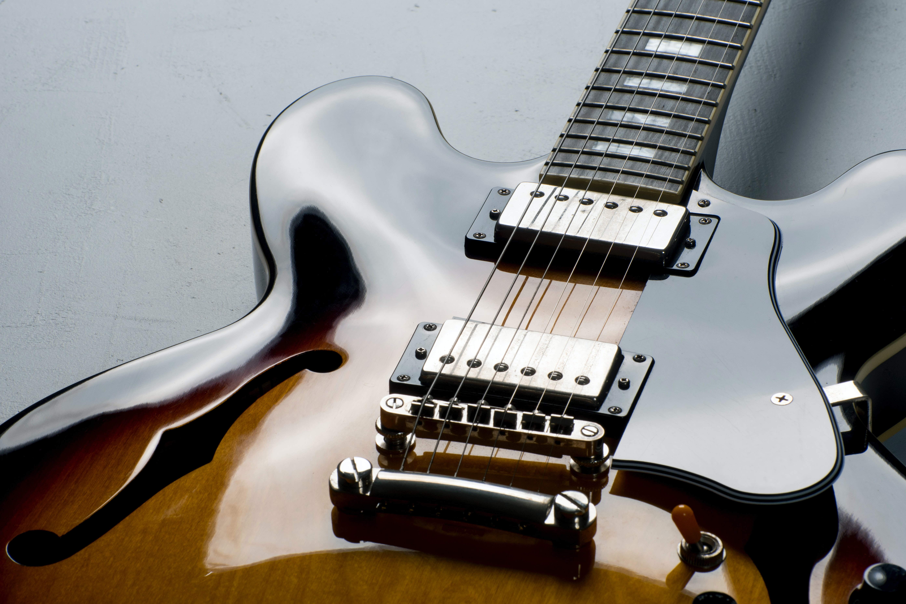

What’s that sound?
Exploring music and why we like it
Texture and how it’s made
Texture is the way different sounds are layered on top of
each other. It's what tells you immediately that you're hearing EDM, or jazz,
or any other genre. Most textures have a balance of different timbres,
or types of sounds. Below are some examples of common textures, and the
timbres that create them.
Rock Bands

Drum set, guitars, and voices create this texture. The drum
set reinforces the beat, and gives listeners cues on where to move. Then there
are high and low (bass) guitars. The guitars and the voices create melody, and
convey an emotional idea about the song. This texture is used by The Beatles, BTS,
Taylor Swift, and Dua Lipa.
EDM
EDM (electronic dance music) is created with electronic sounds. The sounds
are actually tiny recordings of instruments, with effects added. There's always
a beat track with repetitive sounds that you'll want to dance to. Then there's
a buildup that uses different pitches and timbres to build excitement. The drop
has the most intense sounds, and is usually loud and low. EDM performers
include Skrillex, Deadmau5, and Avicci.
Movie Music

Movie music is usually made with an orchestra. There's a beat
created by drums and synthesizers. Then there are low sounds made
with brass and string instruments. You'll hear these low sounds when something dramatic
or scary happens. Higher sounds are created with flutes, violins,
clarinets. These higher instruments usually play the melody, and convey most of the
emotion.